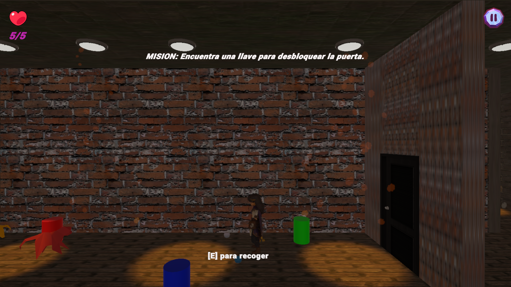
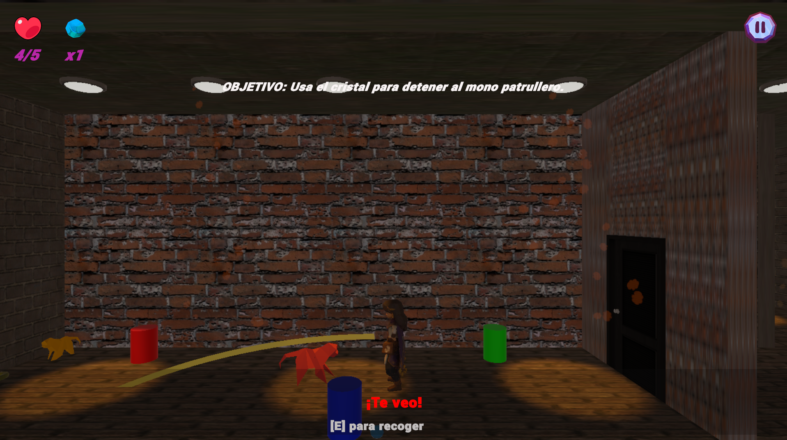
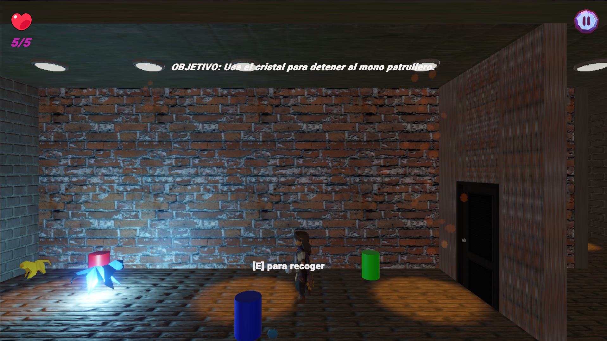

HELENIA · GAMEPLAY 3D
PROYECTO PERSONAL
Helenia
Una aventura 3D de fantasía oscura con estética low-poly, inspirada en los paisajes y la biodiversidad de Colombia. En este prototipo desarrollé mecánicas de juego, comportamientos de enemigos e interacciones de interfaz para dar vida a una primera sección de la experiencia.
Este prototipo jugable reúne la primera parte del mundo y varias de las mecánicas principales que desarrollé para dar forma a la experiencia.
Mecánicas de juego e IA de enemigos
- Implementé en C# mecánicas para lanzar piedras, distraer enemigos y congelar temporalmente sus rutas de patrulla usando un cristal mágico.
- Programé comportamientos de enemigos con patrullaje y persecución mediante NavMesh.
- Implementé la interacción con llaves para que el jugador pueda avanzar por el entorno.
Diseño e implementación de UI
- Diseñé wireframes en Figma para organizar cómo se vería y distribuiría la interfaz.
- Implementé la interfaz con Unity UI Toolkit: personalicé elementos visuales y programé las interacciones en C# para conectarla con la lógica del juego.
Control del personaje
- Adapté un Third Person Controller ya existente para ajustarlo a lo que necesitaba el proyecto.
- Modifiqué el movimiento para bloquearlo durante el diálogo introductorio y evitar entradas de movimiento en ciertas animaciones.
Integración de recursos
- Integré modelos 3D, animaciones, materiales, sprites, imágenes, sonidos y sistemas de partículas para construir esta versión jugable.
- Utilicé recursos de terceros cuando fue necesario y los adapté para que encajaran en la experiencia.
Wireframe de planificación de la interfaz en Figma. Las flechas muestran el flujo entre pantallas.